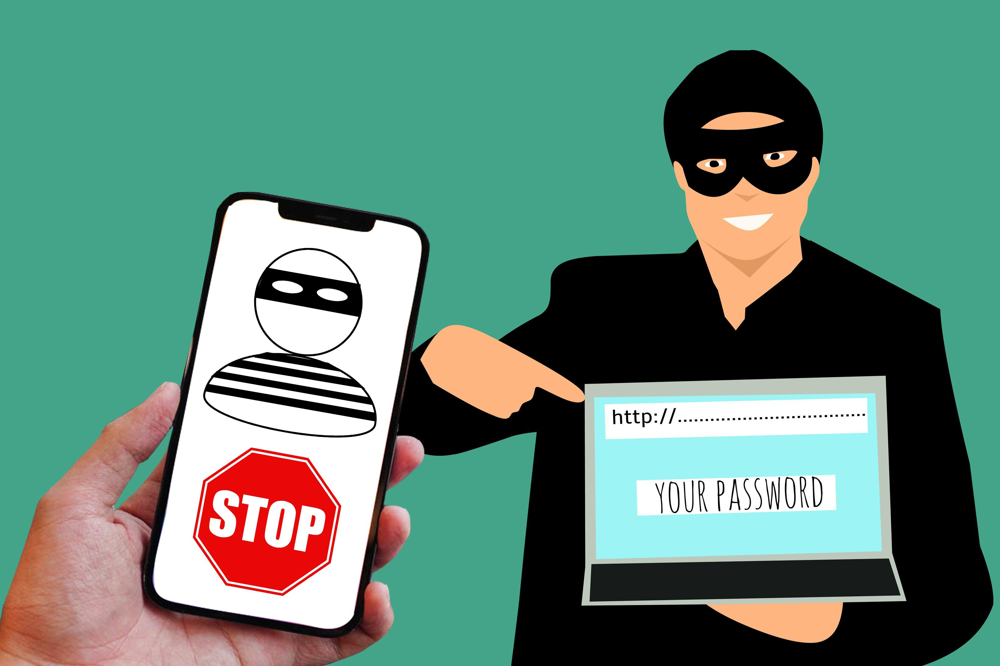

Este quiz tem o propósito de testar seus conhecimentos sobre o golpe digital do Phishing, que foi abordado na seção de conteúdos. Responda às perguntas abaixo para verificar se você entendeu o que foi ensinado. Depois de responder às perguntas, aperte o botão "ENVIAR RESPOSTAS" para ver o seu resultado.